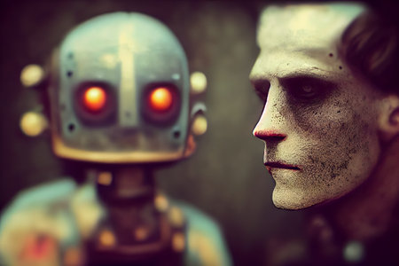
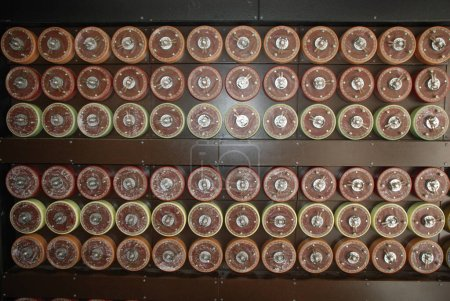

L’origine des machines et son développement
Les intelligences artificielles sont l’essence même de la machine. D’après Wikipédia, « Une machine est un produit mécanique capable d'utiliser une source d'énergie communément disponible pour effectuer par elle-même, sous la conduite ou non d'un opérateur, une ou plusieurs tâches spécifiques, en exerçant un travail mécanique sur un outil, la charge à déplacer ou la matière à façonner. Une machine peut être fixe (machine-outil, machine à laver, etc.) ou mobile (locomotive, tondeuse à gazon, machine à écrire, etc.).». En effet, dans la Rome antique et encore plus loin avant, des premières machines avaient déjà vu le jour. De petits robots fonctionnant avec des systèmes simples pour agir socialement ou physiquement, que les grecs avaient appelé « automates». « L'origine du tour se perd dans la nuit des temps; on sait seulement avec certitude que certaines de ses applications se situent en Égypte plus de mille neuf cents ans avant notre ère. Le premier tour dont on ait connaissance servait à tourner le bois; la pièce à tourner était placée entre deux pointes enfoncées dans deux troncs d'arbre placés à une distance convenable. Le mouvement de rotation était obtenu par une corde accrochée par une de ses extrémités à une branche suffisamment flexible, alors que l'autre extrémité, formée en œillet, était mue au pied par l'opérateur. La mécanique s'est développée grâce aux mécaniciens grecs: Archytas de Tarente, Héron d'Alexandrie, Ctesibius, Archimède (287-212 av. J.-C.). Avec plusieurs autres, ces ingénieurs avant la lettre appartiennent au groupe dit des mécaniciens d'Alexandrie. Pour trouver leurs véritables successeurs, il faut attendre l'extraordinaire ingénieur Léonard de Vinci (1452-1519); génie universel, il conçut à peu près toutes les machines de travail et en traça les dessins. Il faut citer aussi quelques autres mécaniciens de la Renaissance, notamment Cardan, Salomon de Caus (1576-1626), puis Roberval.» D’après un article d’Universalis.fr. A l’origine, les machines avaient pour objectif de faciliter le travail des Hommes, et non les remplacer. Mais les IA aujourd’hui sont si performantes qu’elles obtiennent de meilleurs résultats que des Hommes dans beaucoup de domaines. Mais pour ce qui est de la tâche sociale, c’est-à-dire la communication avec d’autres humains, les IA touchent leurs limitent. C’est pourquoi le développement de la pensée des robots peut être si intéressant pour certains chercheurs. Et c’est aussi pourquoi aujourd’hui, ce développement de pensée amène à se demander si les IA sont réellement capables depenser.
L’objectif d’une IA
Lors de l’apparition des machines, les IA n’avaient pour but que de répondre à un besoin technique pour ainsi optimiser le travail. Aujourd’hui, du fait du progrès considérable des IA, la question de les « faire penser » s’est élaborée. Selon tribune Rohit Prasad, directeur scientifique d'Alexa, « Pour rendre l'IA plus utile aujourd'hui, ces systèmes doivent accomplir efficacement nos tâches quotidiennes. Si vous demandez à votre assistant IA d'éteindre les lumières de votre garage, vous ne cherchez pas à dialoguer. Au lieu de cela, vous souhaitez qu'il réponde à cette demande et vous en informe par un simple accusé de réception, "OK" ou "terminé". Même lorsque vous vous engagez dans un dialogue approfondi avec un assistant IA sur un sujet d'actualité ou que vous faites lire une histoire à votre enfant, vous aimeriez toujours savoir qu'il s'agit d'une IA et non d'un humain. En fait, "tromper" les utilisateurs en se faisant passer pour des humains présente un risque réel. Imaginez les possibilités dystopiques, comme nous avons déjà commencé à le voir avec les robots semant la désinformation et l'émergence de deepfake ».
L’impact des IA dans le monde du travail
Le nœud concernant l’apparition des machines est un point essentiel dans notre question, car sans machine la question ne se poserait pas. La raison pour laquelle nous sommes au centre du débat est la capacité à agir que l’on confie aux IA aujourd’hui. Si par exemple les machines n’étaient que de simples calculatrices, nulle raison d’en avoir peur; mais les IA qui contrôlent le lancement des bombes nucléaire doivent tout de même inspirer un minimum de confiance. En vérité, cette peur est apparue bien avant le véritable développement des IA, selon Robert Skidelsky « Au début du XIXe siècle, Ricardo envisageait que les machines puissent remplacer l'homme, et Marx a fait de même par la suite. Sensiblement à la même époque, en Angleterre et en France dans des usines textiles, les ouvriers ont détruit les machines destinées à les remplacer. ». Ce qui montre que les IA (ou du moins la définition que l’on donnait aux machines), faisaient déjà peur aux ouvriers avant même leur déploiement sur le numérique.
Turing, l’un des tous premiers penseurs du domaine
Dans son livre, Turing explique que la machine peut penser comme un Homme dans une situation de jeu. Mais l’efficacité d’une machine dans une tâche sociale reste limitée. Par ailleurs, chaque machine peut être contrée par une autre, avec un programme réadapté à une adversité. En 1950, date à laquelle ce raisonnement a été fondé, le concept d’intelligence artificielle n’était pas au centre autant qu’il peut l’être aujourd’hui. Le cerveau humain serait en grande partie un ordinateur. Il émet l'hypothèse que le cortex est à la naissance une « machine inorganisée» qui, par le biais de l'apprentissage, devient une « machine universelle ou quelque chose de semblable». Dans le même sens, il invente le « Test de Turing» que l’on détaillera plus tard. La question essentielle que se pose Turing dans son livre est « La machine pense-t-elle? » et c’est dans un jeu imitatif qu’il parvient à se rapprocher d’un résultat. Aujourd’hui, le test a déjà été passé. Pour la première fois, un programme informatique a été capable de tromper des chercheurs en se faisant passer pour un garçon de 13 ans appelé Eugène Goostman. En réussissant cela, un ordinateur a donc passé le test de Turing et a été désigné comme « apte à penser». Le test confrontant machine et chercheurs consiste à tromper au moins 30% de juges humains en 5 minutes à travers des échanges de textes. Jusqu’à ce jour, aucune machine n’avait jamais passé le test.

Sources:
La Machine de Turing, Alan Turing Wikipédia l’origine des machines https://fr.wikipedia.org
Rohit Prasad, https://intelligence-artificielle.developpez.com/...
Robert Skidelsky, https://www.humanite.fr/...